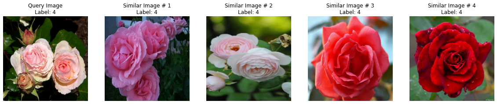
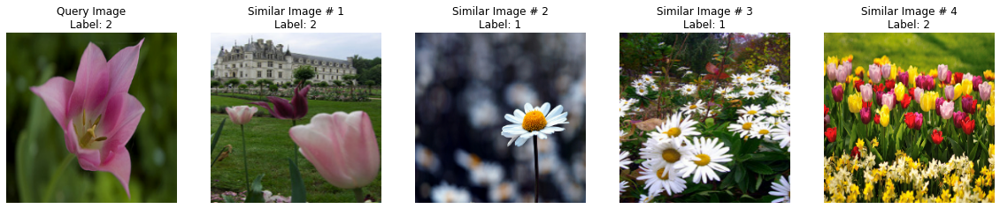
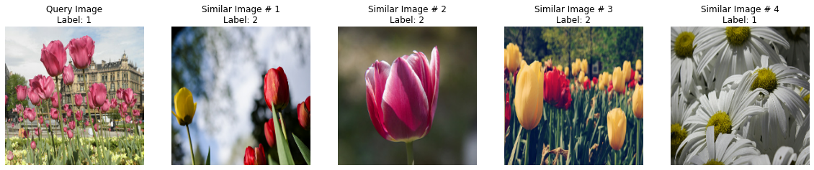
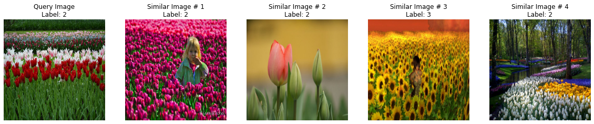
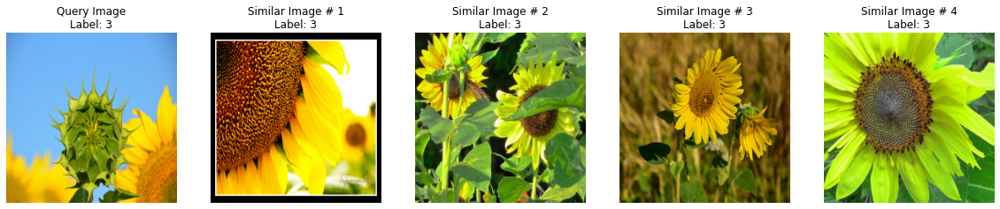
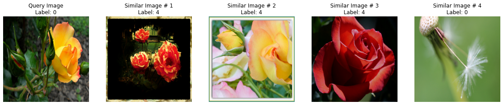
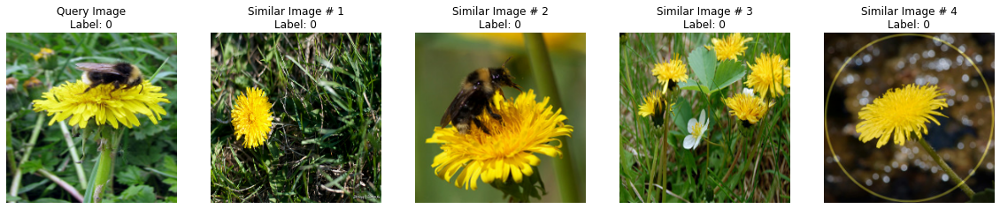
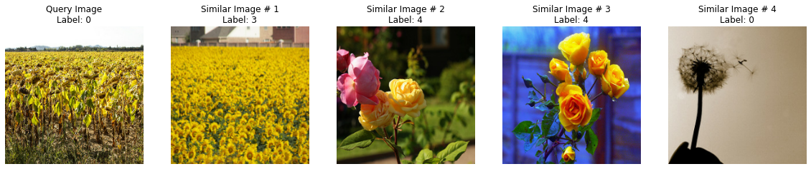
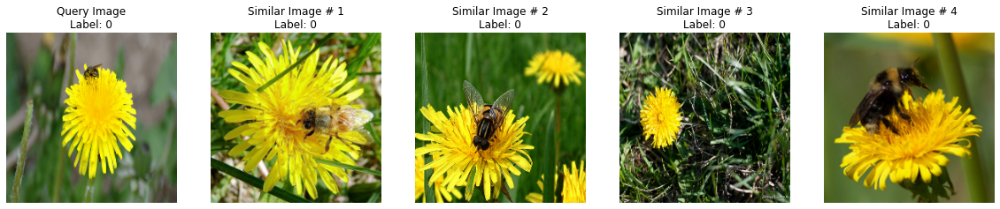
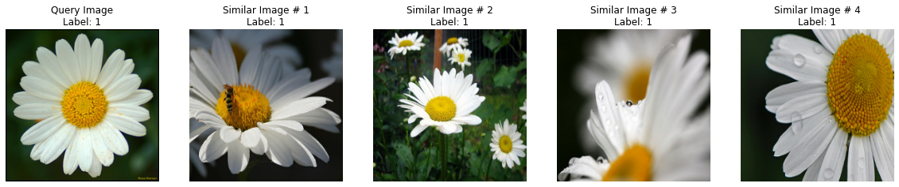

Near-duplicate image search
Author: Sayak Paul
Date created: 2021/09/10
Last modified: 2023/08/30

Description: Building a near-duplicate image search utility using deep learning and locality-sensitive hashing.
Introduction
Fetching similar images in (near) real time is an important use case of information retrieval systems. Some popular products utilizing it include Pinterest, Google Image Search, etc. In this example, we will build a similar image search utility using Locality Sensitive Hashing (LSH) and random projection on top of the image representations computed by a pretrained image classifier. This kind of search engine is also known as a near-duplicate (or near-dup) image detector. We will also look into optimizing the inference performance of our search utility on GPU using TensorRT.
There are other examples under keras.io/examples/vision that are worth checking out in this regard:
- Metric learning for image similarity search
- Image similarity estimation using a Siamese Network with a triplet loss
Finally, this example uses the following resource as a reference and as such reuses some of its code: Locality Sensitive Hashing for Similar Item Search.
Note that in order to optimize the performance of our parser, you should have a GPU runtime available.
Setup
!pip install tensorrt
Imports
import matplotlib.pyplot as plt
import tensorflow as tf
import tensorrt
import numpy as np
import time
import tensorflow_datasets as tfds
tfds.disable_progress_bar()
Load the dataset and create a training set of 1,000 images
To keep the run time of the example short, we will be using a subset of 1,000 images from
the tf_flowers dataset (available through
TensorFlow Datasets)
to build our vocabulary.
train_ds, validation_ds = tfds.load(
"tf_flowers", split=["train[:85%]", "train[85%:]"], as_supervised=True
)
IMAGE_SIZE = 224
NUM_IMAGES = 1000
images = []
labels = []
for (image, label) in train_ds.take(NUM_IMAGES):
image = tf.image.resize(image, (IMAGE_SIZE, IMAGE_SIZE))
images.append(image.numpy())
labels.append(label.numpy())
images = np.array(images)
labels = np.array(labels)
Load a pre-trained model
In this section, we load an image classification model that was trained on the
tf_flowers dataset. 85% of the total images were used to build the training set. For
more details on the training, refer to
this notebook.
The underlying model is a BiT-ResNet (proposed in Big Transfer (BiT): General Visual Representation Learning). The BiT-ResNet family of models is known to provide excellent transfer performance across a wide variety of different downstream tasks.
!wget -q https://github.com/sayakpaul/near-dup-parser/releases/download/v0.1.0/flower_model_bit_0.96875.zip
!unzip -qq flower_model_bit_0.96875.zip
bit_model = tf.keras.models.load_model("flower_model_bit_0.96875")
bit_model.count_params()
23510597
Create an embedding model
To retrieve similar images given a query image, we need to first generate vector representations of all the images involved. We do this via an embedding model that extracts output features from our pretrained classifier and normalizes the resulting feature vectors.
embedding_model = tf.keras.Sequential(
[
tf.keras.layers.Input((IMAGE_SIZE, IMAGE_SIZE, 3)),
tf.keras.layers.Rescaling(scale=1.0 / 255),
bit_model.layers[1],
tf.keras.layers.Normalization(mean=0, variance=1),
],
name="embedding_model",
)
embedding_model.summary()
Model: "embedding_model"
_________________________________________________________________
Layer (type) Output Shape Param #
=================================================================
rescaling (Rescaling) (None, 224, 224, 3) 0
_________________________________________________________________
keras_layer (KerasLayer) (None, 2048) 23500352
_________________________________________________________________
normalization (Normalization (None, 2048) 0
=================================================================
Total params: 23,500,352
Trainable params: 23,500,352
Non-trainable params: 0
_________________________________________________________________
Take note of the normalization layer inside the model. It is used to project the representation vectors to the space of unit-spheres.
Hashing utilities
def hash_func(embedding, random_vectors):
embedding = np.array(embedding)
# Random projection.
bools = np.dot(embedding, random_vectors) > 0
return [bool2int(bool_vec) for bool_vec in bools]
def bool2int(x):
y = 0
for i, j in enumerate(x):
if j:
y += 1 << i
return y
The shape of the vectors coming out of embedding_model is (2048,), and considering practical
aspects (storage, retrieval performance, etc.) it is quite large. So, there arises a need
to reduce the dimensionality of the embedding vectors without reducing their information
content. This is where random projection comes into the picture.
It is based on the principle that if the
distance between a group of points on a given plane is approximately preserved, the
dimensionality of that plane can further be reduced.
Inside hash_func(), we first reduce the dimensionality of the embedding vectors. Then
we compute the bitwise hash values of the images to determine their hash buckets. Images
having same hash values are likely to go into the same hash bucket. From a deployment
perspective, bitwise hash values are cheaper to store and operate on.
Query utilities
The Table class is responsible for building a single hash table. Each entry in the hash
table is a mapping between the reduced embedding of an image from our dataset and a
unique identifier. Because our dimensionality reduction technique involves randomness, it
can so happen that similar images are not mapped to the same hash bucket everytime the
process run. To reduce this effect, we will take results from multiple tables into
consideration – the number of tables and the reduction dimensionality are the key
hyperparameters here.
Crucially, you wouldn't reimplement locality-sensitive hashing yourself when working with real world applications. Instead, you'd likely use one of the following popular libraries:
class Table:
def __init__(self, hash_size, dim):
self.table = {}
self.hash_size = hash_size
self.random_vectors = np.random.randn(hash_size, dim).T
def add(self, id, vectors, label):
# Create a unique indentifier.
entry = {"id_label": str(id) + "_" + str(label)}
# Compute the hash values.
hashes = hash_func(vectors, self.random_vectors)
# Add the hash values to the current table.
for h in hashes:
if h in self.table:
self.table[h].append(entry)
else:
self.table[h] = [entry]
def query(self, vectors):
# Compute hash value for the query vector.
hashes = hash_func(vectors, self.random_vectors)
results = []
# Loop over the query hashes and determine if they exist in
# the current table.
for h in hashes:
if h in self.table:
results.extend(self.table[h])
return results
In the following LSH class we will pack the utilities to have multiple hash tables.
class LSH:
def __init__(self, hash_size, dim, num_tables):
self.num_tables = num_tables
self.tables = []
for i in range(self.num_tables):
self.tables.append(Table(hash_size, dim))
def add(self, id, vectors, label):
for table in self.tables:
table.add(id, vectors, label)
def query(self, vectors):
results = []
for table in self.tables:
results.extend(table.query(vectors))
return results
Now we can encapsulate the logic for building and operating with the master LSH table (a collection of many tables) inside a class. It has two methods:
train(): Responsible for building the final LSH table.query(): Computes the number of matches given a query image and also quantifies the similarity score.
class BuildLSHTable:
def __init__(
self,
prediction_model,
concrete_function=False,
hash_size=8,
dim=2048,
num_tables=10,
):
self.hash_size = hash_size
self.dim = dim
self.num_tables = num_tables
self.lsh = LSH(self.hash_size, self.dim, self.num_tables)
self.prediction_model = prediction_model
self.concrete_function = concrete_function
def train(self, training_files):
for id, training_file in enumerate(training_files):
# Unpack the data.
image, label = training_file
if len(image.shape) < 4:
image = image[None, ...]
# Compute embeddings and update the LSH tables.
# More on `self.concrete_function()` later.
if self.concrete_function:
features = self.prediction_model(tf.constant(image))[
"normalization"
].numpy()
else:
features = self.prediction_model.predict(image)
self.lsh.add(id, features, label)
def query(self, image, verbose=True):
# Compute the embeddings of the query image and fetch the results.
if len(image.shape) < 4:
image = image[None, ...]
if self.concrete_function:
features = self.prediction_model(tf.constant(image))[
"normalization"
].numpy()
else:
features = self.prediction_model.predict(image)
results = self.lsh.query(features)
if verbose:
print("Matches:", len(results))
# Calculate Jaccard index to quantify the similarity.
counts = {}
for r in results:
if r["id_label"] in counts:
counts[r["id_label"]] += 1
else:
counts[r["id_label"]] = 1
for k in counts:
counts[k] = float(counts[k]) / self.dim
return counts
Create LSH tables
With our helper utilities and classes implemented, we can now build our LSH table. Since we will be benchmarking performance between optimized and unoptimized embedding models, we will also warm up our GPU to avoid any unfair comparison.
# Utility to warm up the GPU.
def warmup():
dummy_sample = tf.ones((1, IMAGE_SIZE, IMAGE_SIZE, 3))
for _ in range(100):
_ = embedding_model.predict(dummy_sample)
Now we can first do the GPU wam-up and proceed to build the master LSH table with
embedding_model.
warmup()
training_files = zip(images, labels)
lsh_builder = BuildLSHTable(embedding_model)
lsh_builder.train(training_files)
At the time of writing, the wall time was 54.1 seconds on a Tesla T4 GPU. This timing may vary based on the GPU you are using.
Optimize the model with TensorRT
For NVIDIA-based GPUs, the
TensorRT framework
can be used to dramatically enhance the inference latency by using various model
optimization techniques like pruning, constant folding, layer fusion, and so on. Here we
will use the
tf.experimental.tensorrt
module to optimize our embedding model.
# First serialize the embedding model as a SavedModel.
embedding_model.save("embedding_model")
# Initialize the conversion parameters.
params = tf.experimental.tensorrt.ConversionParams(
precision_mode="FP16", maximum_cached_engines=16
)
# Run the conversion.
converter = tf.experimental.tensorrt.Converter(
input_saved_model_dir="embedding_model", conversion_params=params
)
converter.convert()
converter.save("tensorrt_embedding_model")
WARNING:tensorflow:Compiled the loaded model, but the compiled metrics have yet to be built. `model.compile_metrics` will be empty until you train or evaluate the model.
WARNING:tensorflow:Compiled the loaded model, but the compiled metrics have yet to be built. `model.compile_metrics` will be empty until you train or evaluate the model.
INFO:tensorflow:Assets written to: embedding_model/assets
INFO:tensorflow:Assets written to: embedding_model/assets
INFO:tensorflow:Linked TensorRT version: (0, 0, 0)
INFO:tensorflow:Linked TensorRT version: (0, 0, 0)
INFO:tensorflow:Loaded TensorRT version: (0, 0, 0)
INFO:tensorflow:Loaded TensorRT version: (0, 0, 0)
INFO:tensorflow:Assets written to: tensorrt_embedding_model/assets
INFO:tensorflow:Assets written to: tensorrt_embedding_model/assets
Notes on the parameters inside of tf.experimental.tensorrt.ConversionParams():
precision_modedefines the numerical precision of the operations in the to-be-converted model.maximum_cached_enginesspecifies the maximum number of TRT engines that will be cached to handle dynamic operations (operations with unknown shapes).
To learn more about the other options, refer to the
official documentation.
You can also explore the different quantization options provided by the
tf.experimental.tensorrt module.
# Load the converted model.
root = tf.saved_model.load("tensorrt_embedding_model")
trt_model_function = root.signatures["serving_default"]
Build LSH tables with optimized model
warmup()
training_files = zip(images, labels)
lsh_builder_trt = BuildLSHTable(trt_model_function, concrete_function=True)
lsh_builder_trt.train(training_files)
Notice the difference in the wall time which is 13.1 seconds. Earlier, with the unoptimized model it was 54.1 seconds.
We can take a closer look into one of the hash tables and get an idea of how they are represented.
idx = 0
for hash, entry in lsh_builder_trt.lsh.tables[0].table.items():
if idx == 5:
break
if len(entry) < 5:
print(hash, entry)
idx += 1
145 [{'id_label': '3_4'}, {'id_label': '727_3'}]
5 [{'id_label': '12_4'}]
128 [{'id_label': '30_2'}, {'id_label': '480_2'}]
208 [{'id_label': '34_2'}, {'id_label': '132_2'}, {'id_label': '984_2'}]
188 [{'id_label': '42_0'}, {'id_label': '135_3'}, {'id_label': '436_3'}, {'id_label': '670_3'}]
Visualize results on validation images
In this section we will first writing a couple of utility functions to visualize the similar image parsing process. Then we will benchmark the query performance of the models with and without optimization.
First, we take 100 images from the validation set for testing purposes.
validation_images = []
validation_labels = []
for image, label in validation_ds.take(100):
image = tf.image.resize(image, (224, 224))
validation_images.append(image.numpy())
validation_labels.append(label.numpy())
validation_images = np.array(validation_images)
validation_labels = np.array(validation_labels)
validation_images.shape, validation_labels.shape
((100, 224, 224, 3), (100,))
Now we write our visualization utilities.
def plot_images(images, labels):
plt.figure(figsize=(20, 10))
columns = 5
for (i, image) in enumerate(images):
ax = plt.subplot(len(images) // columns + 1, columns, i + 1)
if i == 0:
ax.set_title("Query Image\n" + "Label: {}".format(labels[i]))
else:
ax.set_title("Similar Image # " + str(i) + "\nLabel: {}".format(labels[i]))
plt.imshow(image.astype("int"))
plt.axis("off")
def visualize_lsh(lsh_class):
idx = np.random.choice(len(validation_images))
image = validation_images[idx]
label = validation_labels[idx]
results = lsh_class.query(image)
candidates = []
labels = []
overlaps = []
for idx, r in enumerate(sorted(results, key=results.get, reverse=True)):
if idx == 4:
break
image_id, label = r.split("_")[0], r.split("_")[1]
candidates.append(images[int(image_id)])
labels.append(label)
overlaps.append(results[r])
candidates.insert(0, image)
labels.insert(0, label)
plot_images(candidates, labels)
Non-TRT model
for _ in range(5):
visualize_lsh(lsh_builder)
visualize_lsh(lsh_builder)
Matches: 507
Matches: 554
Matches: 438
Matches: 370
Matches: 407
Matches: 306






TRT model
for _ in range(5):
visualize_lsh(lsh_builder_trt)
Matches: 458
Matches: 181
Matches: 280
Matches: 280
Matches: 503





As you may have noticed, there are a couple of incorrect results. This can be mitigated in a few ways:
- Better models for generating the initial embeddings especially for noisy samples. We can use techniques like ArcFace, Supervised Contrastive Learning, etc. that implicitly encourage better learning of representations for retrieval purposes.
- The trade-off between the number of tables and the reduction dimensionality is crucial and helps set the right recall required for your application.
Benchmarking query performance
def benchmark(lsh_class):
warmup()
start_time = time.time()
for _ in range(1000):
image = np.ones((1, 224, 224, 3)).astype("float32")
_ = lsh_class.query(image, verbose=False)
end_time = time.time() - start_time
print(f"Time taken: {end_time:.3f}")
benchmark(lsh_builder)
benchmark(lsh_builder_trt)
Time taken: 54.359
Time taken: 13.963
We can immediately notice a stark difference between the query performance of the two models.
Final remarks
In this example, we explored the TensorRT framework from NVIDIA for optimizing our model. It's best suited for GPU-based inference servers. There are other choices for such frameworks that cater to different hardware platforms:
- TensorFlow Lite for mobile and edge devices.
- ONNX for commodity CPU-based servers.
- Apache TVM, compiler for machine learning models covering various platforms.
Here are a few resources you might want to check out to learn more about applications based on vector similary search in general: